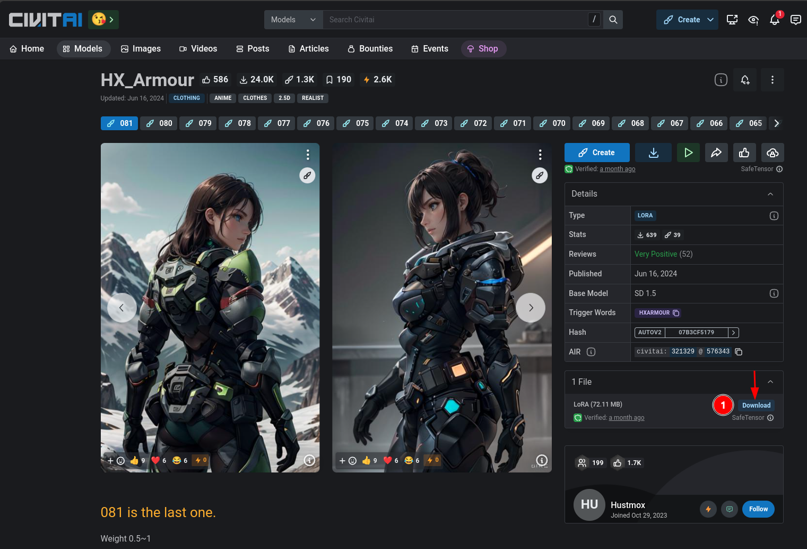

Are you ready to unlock the full potential of SwarmUI? SwarmUI's model download integration with Civit.ai is a game-changer, and we're here to walk you through it.
Table of Contents
- Step 1: Get Your Model's Download Link
- Step 2: Open SwarmUI and Navigate to Model Downloader
- Step 3: Paste the Download Link and Verify Metadata
- Step 4: Click "Download" and Wait for the Magic to Happen!
- Step 5: Enjoy Your New Model!
Step 1: Get Your Model's Download Link
To start, right-click on the download button for your desired model from Civit.ai (Base Model, LoRA, VAE, Embedding, or ControlNet) and select "Copy link". This will give us the URL needed to fetch the model metadata.

Step 2: Open SwarmUI and Navigate to Model Downloader
Next, open up SwarmUI and head over to Utilities -> Model Downloader. This is where the magic happens!

Step 3: Paste the Download Link and Verify Metadata
Paste the copied URL into the URL field, then verify that the returned metadata and Model Type are correct. This ensures we're working with the right model.
Step 4: Click "Download" and Wait for the Magic to Happen!
With everything confirmed, click the Download button and let SwarmUI do its thing. This might take a few moments, but trust us – it's worth it!
Step 5: Enjoy Your New Model!
Congratulations! You now have your new Civit.ai-powered model integrated with SwarmUI. Experiment, create, and explore – the possibilities are endless!
By following these simple steps, you'll be well on your way to unlocking the full potential of your models and taking your creative endeavors to the next level. Happy creating!